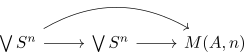

nilpotent moore space is unique up to non unique equivalence
Proposition
Let $M(A,n), M(A,n)'$ be Moore spaces for $n \geq 2$, where $M(A,n), M(A,n)'$ are nilpotent anima Then $M(A,n) \simeq M(A,n)'$ are equivalent. although the equivalence is in general not unique (?).
Proof
Let $\bigoplus \mathbb{Z} \rightarrow \bigoplus \mathbb{Z} \rightarrow A$ be a presentation. Let $\mathrm{Cone}(f)$ be the mapping cone of
which is a Moore space (cf. existence of a moore space).
We show that each nilpotent moore space is equivalent to $M(A,n)$:
Using homology whitehead for nilpotent connected spaces it suffices to construct a map, which is an equivalence on $H_*$.
$n \geq 2$
First observe that nilpotent, connected anima with vanishing H_1 is simply connected. Hence apply the absolute Hurewicz theorem to conclude that
In particular, we get map

where the composition is nullhomotopic.
In particular, we may choose nullhomotopies and extend the map
using Five-Lemma this map is an equivalence on $H_n(-)$ and hence on all homology groups. Thus the map $\mathrm{Cone}(f) \rightarrow M(A,n)$ is an equivalence
$n = 1$ - is this true ?
non uniqueness of
todo (?)